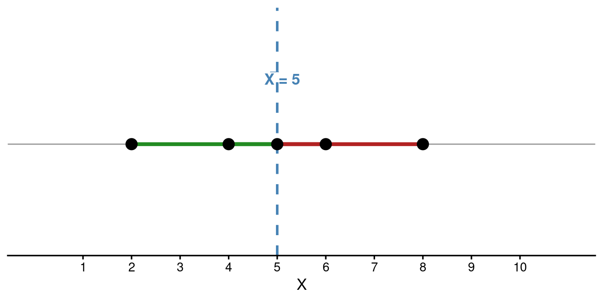
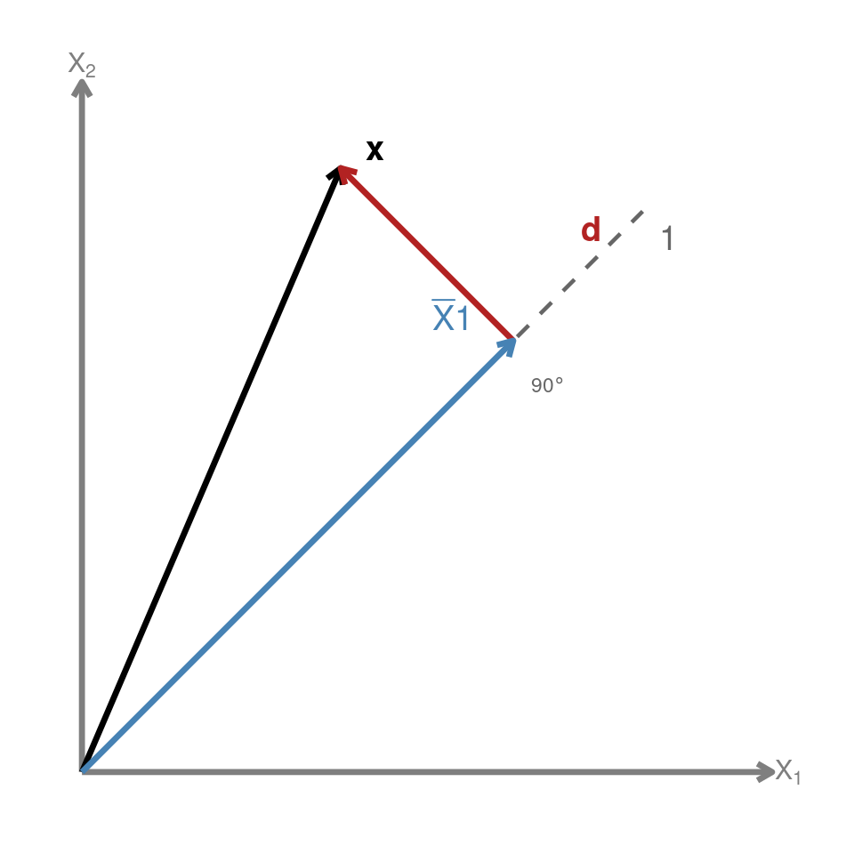

Média Aritmética
Estatística descritiva
Tendência central
Álgebra linear
Formulação vetorial
Definição, propriedades, interpretação geométrica e formulação vetorial/matricial da média aritmética.
Quando observamos um conjunto de dados, a primeira questão que surge é: onde estão concentrados os valores? Uma medida de posição é um único número que representa o “centro” de um conjunto de observações. Ela permite condensar \(n\) valores em uma única quantidade informativa — um representante do conjunto.
Neste capítulo, desenvolvemos rigorosamente a média aritmética, a medida de posição de maior relevância teórica e prática. Sua importância vai além do cálculo elementar: ela possui uma interpretação geométrica precisa e admite uma formulação vetorial e matricial que a conecta diretamente com os demais conceitos da UC.
1 Definição formal
Seja \(X\) uma variável com \(n\) observações \(X_1, X_2, \ldots, X_n\). A média aritmética de \(X\), denotada por \(\bar{X}\), é definida como:
\[\bar{X} = \frac{X_1 + X_2 + \cdots + X_n}{n} = \frac{1}{n}\sum_{i=1}^n X_i\]
A média é, portanto, a soma de todas as observações dividida pelo número de observações. Ela atribui peso igual a cada elemento do conjunto.
Exemplo. Considere a variável \(X = \{2,\ 6,\ 4,\ 8,\ 5\}\), com \(n = 5\) observações. A média é:
\[\bar{X} = \frac{2 + 6 + 4 + 8 + 5}{5} = \frac{25}{5} = 5\]
2 Propriedades algébricas
2.1 A soma dos desvios é sempre zero
Defina o desvio de cada observação em relação à média como \(d_i = X_i - \bar{X}\). Uma propriedade fundamental da média é que a soma de todos os desvios é exatamente zero:
\[\sum_{i=1}^n (X_i - \bar{X}) = 0\]
Demonstração. Expandindo a soma:
\[\sum_{i=1}^n (X_i - \bar{X}) = \sum_{i=1}^n X_i - \sum_{i=1}^n \bar{X} = \sum_{i=1}^n X_i - n\bar{X}\]
Substituindo \(\bar{X} = \frac{1}{n}\sum X_i\):
\[= \sum_{i=1}^n X_i - n \cdot \frac{1}{n}\sum_{i=1}^n X_i = \sum_{i=1}^n X_i - \sum_{i=1}^n X_i = 0 \qquad \square\]
No exemplo acima, os desvios são \(d_i = (-3,\ 1,\ -1,\ 3,\ 0)\), cuja soma é \(\sum d_i = 0\).
Esta propriedade tem uma consequência imediata: a média é o único valor \(c\) que minimiza \(\sum_{i=1}^n (X_i - c)^2\). Em outras palavras, a média é o ponto de equilíbrio do conjunto de dados — ela equilibra os desvios positivos e negativos.
2.2 A média minimiza a soma dos quadrados dos desvios
Para qualquer constante \(c\), pode-se mostrar que:
\[\sum_{i=1}^n (X_i - c)^2 = \sum_{i=1}^n (X_i - \bar{X})^2 + n(\bar{X} - c)^2 \geq \sum_{i=1}^n (X_i - \bar{X})^2\]
A igualdade ocorre somente quando \(c = \bar{X}\). Portanto, a média aritmética é o valor que minimiza a soma dos quadrados dos desvios — conexão direta com o método dos mínimos quadrados.
3 Interpretação geométrica
3.1 O exemplo
Considere os três valores \(2\), \(5\) e \(8\). Se quisermos representar esse conjunto por um único número constante, esse número gera um vetor com todas as entradas iguais:
\[c\mathbf{1} = c \times \begin{bmatrix} 1 \\ 1 \\ 1 \end{bmatrix} = \begin{bmatrix} c \\ c \\ c \end{bmatrix}\]
Vamos comparar três escolhas possíveis:
\[\mathbf{x} = \begin{bmatrix} 2 \\ 5 \\ 8 \end{bmatrix}, \qquad 4 \mathbf{1} = \begin{bmatrix} 4 \\ 4 \\ 4 \end{bmatrix}, \qquad 5\mathbf{1} = \begin{bmatrix} 5 \\ 5 \\ 5 \end{bmatrix}, \qquad 6\mathbf{1} = \begin{bmatrix} 6 \\ 6 \\ 6 \end{bmatrix}\]
As diferenças entre os dados e cada vetor constante são:
\[\mathbf{x} - 4\mathbf{1} = \begin{bmatrix} -2 \\ 1 \\ 4 \end{bmatrix}, \qquad \mathbf{x} - 5\mathbf{1} = \begin{bmatrix} -3 \\ 0 \\ 3 \end{bmatrix}, \qquad \mathbf{x} - 6\mathbf{1} = \begin{bmatrix} -4 \\ -1 \\ 2 \end{bmatrix}\]
Somando os quadrados dessas diferenças, obtemos:
\[(-2)^2 + 1^2 + 4^2 = 21, \qquad (-3)^2 + 0^2 + 3^2 = 18, \qquad (-4)^2 + (-1)^2 + 2^2 = 21\]
Logo, entre esses candidatos, o vetor constante mais próximo de \(\mathbf{x}\) é \(5\mathbf{1}\). E \(5\) é justamente a média dos valores \(2\), \(5\) e \(8\).
3.2 A ideia central
Considere agora as observações:
\[\mathbf{x} = \begin{bmatrix} X_1 \\ X_2 \\ \vdots \\ X_n \end{bmatrix}\]
Também podemos usar o vetor de uns \(\mathbf{1} = (1,1,\ldots,1)^\top\) e multiplicá-lo por uma constante \(c\) para produzir um vetor com todas as entradas iguais a \(c\). Portanto, o conjunto dos vetores da forma \(c\mathbf{1}\) representa exatamente os vetores constantes, isto é, vetores na direção do vetor de uns.
A decomposição fundamental da média é:
\[\mathbf{x} = \bar{X}\mathbf{1} + \mathbf{d}\]
em que
\[\mathbf{d} = \mathbf{x} - \bar{X}\mathbf{1} = \begin{bmatrix} X_1 - \bar{X} \\ X_2 - \bar{X} \\ \vdots \\ X_n - \bar{X} \end{bmatrix}\]
O vetor \(\bar{X}\mathbf{1}\) é a parte constante que representa o centro dos dados, e o vetor \(\mathbf{d}\) reúne os desvios em relação a esse centro.
Essa decomposição traduz, em linguagem vetorial, a igualdade escalar
\[X_i = \bar{X} + d_i \qquad (i = 1,\ldots,n)\]
Como a soma dos desvios é zero, temos:
\[\mathbf{1}^\top \mathbf{d} = \sum_{i=1}^n d_i = 0\]
Isso quer dizer que os desvios se compensam e o que fica acima da média é equilibrado pelo que fica abaixo. Dizemos que \(\mathbf{d}\) é perpendicular à direção dos vetores constantes. Formalmente, dizemos que \(\bar{X}\mathbf{1}\) é a projeção ortogonal de \(\mathbf{x}\) sobre a direção de \(\mathbf{1}\).

4 Formulação vetorial
Com a intuição em mãos, podemos escrever a média de forma compacta usando a ideia do produto escalar \(\mathbf{1}^\top\mathbf{x}\). No exemplo anterior,
\[\mathbf{1}^\top\mathbf{x} = 2 + 5 + 8 = 15 \qquad \text{e} \qquad \mathbf{1}^\top\mathbf{1} = 3\]
Portanto,
\[\bar{X} = \frac{15}{3} = 5\]
No caso geral,
\[\bar{X} = \frac{\mathbf{1}^\top \mathbf{x}}{n} = \frac{\mathbf{1}^\top \mathbf{x}}{\mathbf{1}^\top \mathbf{1}}\]
Essa expressão mostra que a média pode ser obtida a partir do vetor de dados e do vetor de uns usando apenas soma e divisão pelo número de observações.
A parte constante associada à média também pode ser escrita de forma compacta:
\[\bar{X}\mathbf{1} = \frac{\mathbf{1}\mathbf{1}^\top}{n}\,\mathbf{x}\]
A matriz
\[\mathbf{H}_\mathbf{1} = \frac{\mathbf{1}\mathbf{1}^\top}{n}\]
transforma qualquer vetor no vetor constante correspondente à sua média. Em outras palavras, ela extrai a parte explicada pela média. Assim,
\[\bar{X}\mathbf{1} = \mathbf{H}_\mathbf{1}\mathbf{x}\]
A parte restante é o vetor de desvios:
\[\mathbf{d} = \mathbf{x} - \bar{X}\mathbf{1} = (\mathbf{I} - \mathbf{H}_\mathbf{1})\mathbf{x} = \mathbf{M}\mathbf{x}\]
onde
\[\mathbf{M} = \mathbf{I} - \frac{\mathbf{1}\mathbf{1}^\top}{n}\]
é a matriz que remove a média e deixa apenas a parte residual do vetor.
Resumo: a média na linguagem vetorial
| Quantidade | Leitura pedagógica | Expressão vetorial |
|---|---|---|
| Média | média das entradas de \(\mathbf{x}\) | \(\bar{X} = \dfrac{\mathbf{1}^\top \mathbf{x}}{n}\) |
| Vetor constante da média | repete a média em todas as posições | \(\bar{X}\mathbf{1} = \mathbf{H}_\mathbf{1}\mathbf{x}\) |
| Vetor de desvios | sobra depois de retirar a média | \(\mathbf{d} = \mathbf{M}\mathbf{x}\) |
| Compensação dos desvios | soma dos desvios igual a zero | \(\mathbf{1}^\top\mathbf{d} = 0\) |
| Decomposição | dados = média + desvios | \(\mathbf{x} = \mathbf{H}_\mathbf{1}\mathbf{x} + \mathbf{M}\mathbf{x}\) |
5 Formulação matricial
Quando temos \(p\) variáveis observadas em \(n\) unidades, organizamos os dados na matriz \(\mathbf{X}\) de dimensão \(n \times p\), onde cada coluna é um vetor de observações de uma variável:
\[\mathbf{X} = \begin{bmatrix} X_{11} & X_{12} & \cdots & X_{1p} \\ X_{21} & X_{22} & \cdots & X_{2p} \\ \vdots & \vdots & \ddots & \vdots \\ X_{n1} & X_{n2} & \cdots & X_{np} \end{bmatrix}\]
O vetor de médias das colunas é
\[\bar{\mathbf{x}} = \frac{1}{n}\mathbf{X}^\top\mathbf{1} = \begin{bmatrix} \bar{X}_1 \\ \bar{X}_2 \\ \vdots \\ \bar{X}_p \end{bmatrix}\]
Multiplicar \(\mathbf{X}\) por \(\mathbf{H}_\mathbf{1}\) à esquerda produz, em cada coluna, o vetor constante associado à respectiva média:
\[\mathbf{H}_\mathbf{1}\mathbf{X} = \mathbf{1}\bar{\mathbf{x}}^\top\]
Já a multiplicação por \(\mathbf{M}\) remove essa parte constante e deixa os dados centrados:
\[\tilde{\mathbf{X}} = \mathbf{M}\mathbf{X} = \mathbf{X} - \mathbf{1}\bar{\mathbf{x}}^\top\]
Assim, cada coluna de \(\tilde{\mathbf{X}}\) passa a ter média zero. Essa matriz centrada será o ponto de partida para variância, covariância, correlação e, mais adiante, para a linguagem matricial dos mínimos quadrados.
Se quisermos registrar o nome técnico, dizemos que \(\mathbf{H}_\mathbf{1}\) é uma matriz de projeção sobre a direção de \(\mathbf{1}\) e que \(\mathbf{H}_\mathbf{1}\) e \(\mathbf{M}\) são idempotentes, isto é, aplicá-las duas vezes não muda o resultado.